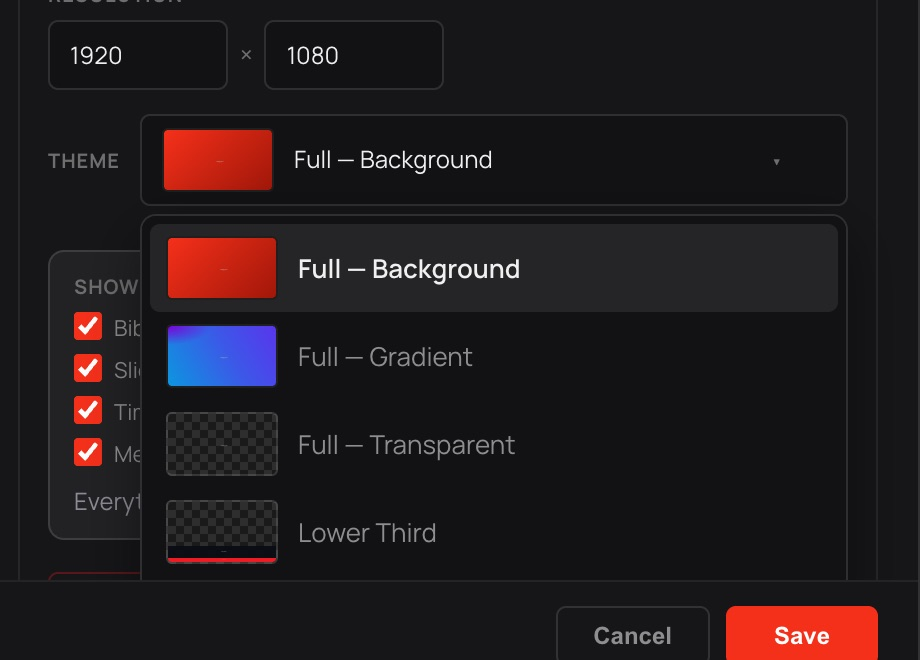
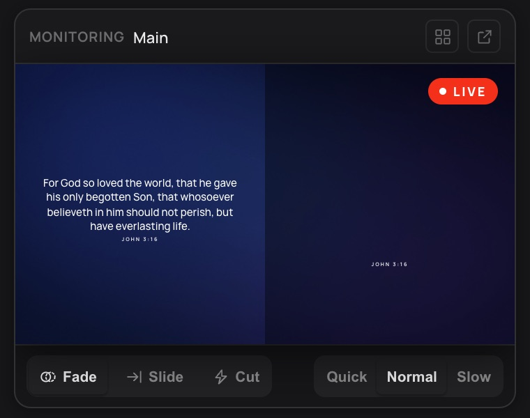

Live Queue
Auto-Deploy
Sent verses and range queues appear here…
Each point of the sermon with its quotable lines and the scriptures referenced in it, then the prayer points — saved as a PDF in Downloads.
✓ This file's original design (fonts, layout, images) will be kept as-is — no theme needed.
Lines per slide. 0 keeps each imported block/stanza as one slide (“keep as-is”).
Blank lines separate slides; each remaining line is a line on that slide.
Most accurate. Needs a Deepgram key ($200 free credit to start).
Listens offline in the language set under Language → Spoken language — Spanish, French, Portuguese, German, Korean and more.
The version a verse goes up in.
Click Change, then press the keys. These work alongside the shortcuts in the app’s menus.
How Kairo works, start to finish. Click a section to expand it, or search for a word.
Kairo listens to whoever's preaching, matches what's said against the Bible in real time, and puts the right verse on screen automatically — the same way a slide operator would, without someone driving it live.
Everything else — playlists, slides, songs, themes — can be prepared before or during the service; detection runs independently in the background the whole time.
Cameras, layouts and the live stream are there when you want them: see Director mode and Streaming below.
A verse reaches the screen on its own in three ways — nobody needs to press a button:
Once a passage is up, the preacher can move within it: "verse 5", a number said on its own, "next verse" / "the following verse", "previous verse", "go back to verse 3", "the last verse". A spoken range ("verses 1 to 9", "from verse 4 to the end") advances verse by verse as the reading continues.
Kairo also follows a verse put in the preacher's own words ("the Bible says don't worry about anything, pray about everything…"). A paraphrase goes to the screen on its own only when every check agrees; otherwise it waits in Possible Matches. Modern wording counts too: a verse quoted from memory the way the NIV or NLT puts it ("plans to prosper you and not to harm you") is offered even when your church reads the KJV. Well-known passages named in passing ("the prodigal son", "the Lord's Prayer") are offered in Possible Matches too.
Possible Matches holds what Kairo found but isn't certain enough to put up on its own — click one to send it. This is deliberate: a wrong verse on screen is worse than a missed one. While a song or slide is live, only a spoken citation goes up on its own; lyrics that quote scripture are offered in Possible Matches instead.
To decide every verse yourself, switch Auto off (the Auto-Deploy badge, or Put confident matches on screen automatically under Settings → Bible): nothing goes to the screen by itself, and every detected verse waits in Possible Matches for a click (in Director mode, on Preview for Send).
The Live Queue marks the verse on screen right now with LIVE. If a wrong verse goes up — or something is cleared by mistake — press Back (the arrow by Clear Bible, or ⌘←) to put back what was showing before; Kairo won't immediately send the undone verse again. In the Live Transcript Log, a chip marks the words that sent each verse — click it to send that verse again.
Use the search field at the top of the Bible tab:
The list only shows verses the words actually identify, so a phrase every other verse contains ("the Lord is") shows nothing until you type a little more.
Press / to jump to the search field. Double-click a line in the Live Transcript Log to search those words — the quickest way to find a verse Kairo missed.
Press ⌘F (Ctrl+F on Windows), or choose Edit → Find…, from anywhere in Kairo to search it all at once: Bible verses, songs, every playlist item and its slides, media files, timers and this Help.
With nothing typed, the box lists your recent searches.
The left sidebar is your run-of-show — a playlist of items in the order they'll go out. Each top tab is a different kind of content to add:
Use + New in the sidebar to create additional named playlists (e.g. one per service) — Default is just the one that's there from the start.
Click any slide in an item to send it live; the currently-live slide is highlighted. Right-click a slide for more options (duplicate, delete, split, etc.).
Quick edit (right-click a song or deck) has two ways to edit. Slides gives a text field per slide: Shift+Enter splits a slide at the caret, and Backspace at the very start joins it onto the one before. Text shows the whole song or deck as one piece of writing, the easiest way to paste in or rework lyrics: a blank line starts a new slide, and a line like [Chorus] or [Verse 2] starts a part (in a deck, it names the next slide). The slides it makes are listed beside the text as you type, and each slide keeps its own theme.
While Kairo is listening, slides follow along by themselves: a live song or sermon deck advances as it's sung or preached (the bar under the playlist shows Following and where it is), and a slide deck in the playlist comes up on its own when its first slide is said. When the slides move on while a scripture is on screen, the slide takes the screen back — the preacher has moved on. A slide that is itself scripture (the sermon's verses put on slides) is left to Bible detection, which puts the verse up as it's read. Click any slide to take over — following carries on from there. Stop listening and it stops.
Bring in existing material instead of rebuilding it by hand, from either File → Import or the + button on a playlist item:
.pro/.pro6/.probundle/.proplaylist, plus .protheme themes), PowerPoint (.pptx), Word (.docx) and text (.txt/.md). Pick a row, or drop a file on the window.ProPresenter files are handled specially. Kairo auto-detects them and preserves the file's own design exactly as authored — fonts, colors, positions, images, layer structure — instead of reformatting it into a Kairo theme. The Add dialog shows a notice confirming this rather than asking you to pick a theme, since none is needed. A playlist file with several presentations imports all of them at once, each keeping its own original layout.
A plain text/Word import instead asks how to split it into slides (by paragraph, or a fixed number of lines each) and which theme to render it with, since there's no original design to preserve.
Theme Studio is where a slide's actual design lives — background, text position/font/color, animations. A theme applies to every slide in an item that doesn't have its own override.
A ProPresenter-imported slide is the one exception: it carries its own preserved layout directly (see Importing above), independent of whichever theme is assigned to the rest of the item — editing it in Full-Scale Edit adjusts that one slide's own layers, not a shared theme.
The Multi-Language theme is a special split layout — the verse's own language on one side, a translated version on the other (see Multi-Language below).
Monitor layouts design what a Monitor output shows for whoever is up front. Start from New → New monitor layout or edit one of the two under Monitor layouts. A text layer's Shows can be what is on screen now, its reference, the next slide, the time of day, the countdown or the message from the booth; add backgrounds, logos and shapes like any theme. Pick it for a Monitor under Settings → Outputs (Layout); Built-in keeps the standard view. Monitor layouts never show up as themes for slides or verses.
Screen themes (Director mode only, under Screens) are whole-screen designs for layouts: a background, frames and logos, a Video zone where the camera shows and a Content zone where slides and Bible verses show, each in its own theme. Add the zones with the two tools next to Image, or start from New → New screen theme. Put a verse text layer in a screen theme and it styles the verse itself instead of using a content zone.
Settings → Outputs lists every destination on the left; click one to see and edit its settings on the right. Use + Add Output (top right) to add a Display/Projector, an NDI output, or a Syphon output — each new one can be renamed and given its own theme. The switch in each output's header (list row or detail panel) turns that destination on or off; a dot next to it shows whether it's actually connected/broadcasting.
The Monitor (right side, under Clear Bible) shows exactly what each output is showing right now. Pick Main or any output that's on from its list, or use the grid button to see them all side by side — click a tile to watch just that one. The arrow button opens the monitor in its own window, about the size of Settings: resize or move it as you like; it stays above Kairo while you keep working.
Each NDI/Syphon output also has its own configurable resolution and network/source name, editable any time under its detail panel.
Output Control (further down the same page) has one card per output with a switch for each kind of content: Scripture, Slides and songs, Timer, Media, Overlays, and Words only. Each card ends with one sentence saying what that output shows and what is hidden. Copy from… copies another output's choices. A Monitor always shows words only, so Media is dimmed there.
Output layers, bottom to top: the background (the theme's, or a layout's in Director mode), Media (background image or video), Slide, Bible, the timer, and Overlays always on top. Output Control shows this order too. A Words only or keyed output shows the words alone: no media, overlays or layout frame. When a scripture goes up — called by the preacher or sent by you — it covers the live slide without ending it, and your view stays where it is. Slides that follow along while listening keep the slide underneath up to date. Clear Bible (lit while a scripture covers a slide) brings that slide back; Clear Slide removes only the slide; clicking a slide yourself sends it straight out.
Background music (Settings → Audio → Sound output) plays on its own while slides, scripture and video change. Add sound files with + Add music, then play them there or from the small player that appears under the Monitor. Choose what happens after a track (stop, repeat all, repeat one), a fade length, whether the music lowers under a video with sound, and whether it starts when Kairo opens. Play on picks the sound device. Remote controls (OSC) can play, pause, stop, skip and fade it out.
Overlays (Settings → Overlays) are pictures and videos that sit on top of everything on the screens, like a logo, a "Live" badge or a lower-third. Add any number with + Add overlay (png, jpg, gif, webp, svg, mp4, webm, mov). Switch each on or off, drag it in the preview or use the sliders for size, position and opacity, and choose whether it shows when Kairo opens. Sets group overlays, for example one for a special service: switch a whole set on together without touching the others. Which outputs show overlays is set under Output Control.
Turn on Settings → Director mode to switch Kairo to a screen for cameras and inputs. The normal screen comes back when you turn it off.
In Director mode, Replay in the top bar plays back the last few seconds of the camera on air. Switch on Keep the camera on air recording for replays there first (it is off by default, because it keeps the camera recording in the background). Then Replay to Preview saves about the last 8 to 16 seconds to the Media Bin as "Replay …" and puts it in Preview; Send puts it on the screens, like any video. Stream Deck and OSC can do it too (/kairo/director-replay).
Settings → Streaming is where the destinations for a live stream are kept: YouTube, Facebook, Twitch or any RTMP or RTMPS address, each with its own switch, so one stream can go to several places. Pick the video size, frame rate and quality your internet upload can carry, and the audio quality. Audio always comes from the input chosen under Settings → Audio.
Go live (top bar, or on that page) starts every destination that is switched on; the button then shows LIVE and how long you have been on air, and each destination shows whether it is live. Click it again to stop. The stream is exactly what the output shows: scripture, slides, the layout, overlays, and in Director mode the camera on air, placed in the layout's video zone; switching cameras or layouts never drops the stream. If the connection drops, Kairo reconnects by itself.
When there is more than one output, each destination can stream a different one (Streams in its settings). Check tests that this computer can reach a server without starting anything. Stream keys stay on this computer. Stream Deck, OSC and macros can start and stop the stream and recording.
Recording: Record (top bar in Director mode, or switch it on under Settings → Streaming → Recording) writes what the output shows to an MP4 on this computer, in Movies → Kairo unless you choose another folder. It is separate from going live: record without streaming, or stream without recording. The file is written as it goes, so a recording cut off by a crash or power cut still plays up to that moment; if something goes wrong mid-way, Kairo carries on in a second file beside the first instead of writing over it.
Sound mixer: under Settings → Streaming → Sound, the stream and recordings can take several inputs at once (say the desk feed and a room microphone), each with its own level, mute and meter. While live or recording, the Sound button in the top bar opens the same mixer; levels and mutes change straight away without interrupting anything. Double-click a fader to put it back to 0 dB.
Sound: by default the stream takes the input chosen under Settings → Audio. Use your sound desk's stream or aux feed for it (through a USB audio interface or the desk's own USB): it already carries the microphones, the band and Kairo's music as the room hears them. Kairo doesn't add its own music on top, so nothing is heard twice. With no desk, a loopback driver (such as BlackHole on a Mac) can combine a microphone and Kairo's sound into one input.
A macro does several things with one press. Make one under Settings → Macros: give it a name and add steps, for example load Layout 2, switch the welcome overlay on, start the music, wait 3 seconds, Send. A step can be anything Stream Deck or OSC can do, a message on the Monitors or the screens, an overlay on or off, or a wait.
Run it from the Macros button in the top bar (it appears once there is a macro), or from Stream Deck and OSC: the first nine are /kairo/macro-1 to /kairo/macro-9, in the order shown in Settings. Clicking a running macro stops it before its next step. A macro sends nothing a person couldn't: a Send step sends what is in Preview, as the Send button would.
Under Settings → Language: Spoken language is what the preacher is actually speaking (it drives transcription). Scripture shows in is the language a matched verse appears in, picked from the Bibles that come with Kairo, all of them working offline. If the preacher's language has a Bible and the screen isn't showing it, a line offers to switch. Also show beside it adds a second language next to the verse and on slides, for the Multi-Language theme. Languages on this computer lists each language's Bible (always included) and its slide translation, which is the one download.
For a service preached in Spanish, Portuguese, French or German, set the spoken language and Kairo understands citations in that language ("Juan capítulo tres versículo dieciséis", "siguiente versículo") and matches verses read aloud against that language's Bible. Other spoken languages are transcribed, but detection follows English citations and readings.
Church vocabulary (same page) — names and words your services use that transcription may mishear: the pastor, the church, local places. One per line; used from the next Start Listening (English and auto-detect services).
Slide Translation Models are separate — they translate ordinary (non-scripture) slide/sermon text for the Multi-Language split theme, using a small bundled local model with no setup, API key, or internet connection required once downloaded.
See the Shortcuts section (just above this one) for the full customizable list — click Change next to any action, then press the new key combo.
brew install ffmpeg), or set KAIRO_FFMPEG to one.server.log (see above).NDI® — NDI® is a registered trademark of Vizrt NDI AB. Kairo uses NDI's free runtime, downloaded from NDI on first use; see ndi.video. Its licence notices ship with Kairo (libndi_licenses.txt).
FFmpeg — Kairo carries a build of FFmpeg (LGPL 2.1 or later), run as a separate program to convert video the app can't play directly. It is also the encoder for live streaming.
Blackmagic Design — Kairo is compatible with Blackmagic Design DeckLink. DeckLink is a trademark of Blackmagic Design Pty. Ltd.
Nothing in Help mentions that. Try another word.
What the preacher speaks. Drives live transcription — set it before the service starts.
Names transcription may miss — your pastor, your church, local places. One per line, up to 40. Applies from the next Start Listening.
The language a matched verse appears in. All of these are inside Kairo and work offline.
A second language next to the verse and on slides, on the Multi-Language theme.
Every language comes with its Bible. Slide translation is the download. Remove one to free the space.
The screens and streams Kairo sends to.
What each output shows.
Welcome to Kairo
Kairo listens to the sermon and puts up the verse — in your theme, on every screen, online or off.
…turn with me to John 3:16
John 3:16The Lord is my shepherd; I shall not want
Psalm 23:1…all things work together for good
Romans 8:28For God so loved the world…
John 3:16The Lord is my shepherd; I shall not want.
Psalm 23:1All things work together for good to them that love God…
Romans 8:28For God so loved the world…
John 3:16For God so loved the world…
John 3:16For God so loved the world…
John 3:16…let’s switch to the NIV
For God so loved the world, that he gave his only begotten Son…
For God so loved the world that he gave his one and only Son…
Nítorí Ọlọ́run fẹ́ aráyé tó bẹ́ẹ̀ gẹ́ẹ́, tí ó fi ọmọ rẹ̀ kan ṣoṣo fún ni…
John 3:16 · YorùbáNʼihi na Chineke hụrụ ụwa nʼanya, nke a mere o jiri nye Ọkpara ọ mụrụ naanị ya…
John 3:16 · IgboGama Allah ya ƙaunaci duniya sosai har ya ba da wanda yake Ɗaya kuma Makaɗaicin Ɗansa…
John 3:16 · HausaMaana Mungu aliupenda ulimwengu hivi hata akamtoa Mwana wake wa pekee…
John 3:16 · KiswahiliCar Dieu a tant aimé le monde qu’il a donné son Fils unique…
John 3:16 · FrançaisPorque de tal manera amó Dios al mundo, que ha dado á su Hijo unigénito…
John 3:16 · EspañolPorque Deus amou o mundo de tal maneira, que deu o seu Filho unigenito…
John 3:16 · PortuguêsAlso hat GOtt die Welt geliebet, daß er seinen eingeborenen Sohn gab…
John 3:16 · Deutsch1 · Love that gives John 3:16Romans 5:8
“Love is proven by what it gives.”
2 · Love that stays Romans 8:38
3 · Love that sends 1 John 4:11
Prayer · Lord, teach us to love like this.
…and we know that all things work together for good…
Cited, read aloud or quoted — on screen the moment it’s said.
Step 1 of 2
You can change this any time in Settings → Audio.
Runs entirely on this computer — no internet, no API key. Lower accuracy than Deepgram.
You haven't set up a Deepgram key or downloaded the offline model yet — you can finish this anytime in Settings → Audio before starting a session.
Made for the whole room

Projector, lobby, livestream over NDI or Syphon, and Blackmagic DeckLink — give every output a different theme, all fed by the same verse.
Show the verse in two languages side by side, on a theme built for it. Slide text translates on this computer.

Open it in its own window and watch what each screen is showing, live, from the sound desk.
What’s inside
Bring in .pro files, bundles, playlists and themes — slides keep their look.
Word, PowerPoint or pasted text. Headings start slides; line breaks stay.
Nine Bibles, including Yoruba, Igbo and Hausa, all working offline — and slides translated into French, Spanish or Portuguese on this computer.
When you’re ready for more
Cameras and inputs, Preview and Output, layouts that frame the verse beside the camera. Turn it on in Settings when you need it.
Stream what the screen shows to YouTube, Facebook, Twitch or any RTMP server, with the sound from your desk.
A logo or badge over every screen, and music that plays on its own while slides and scripture change.
Step 2 of 2
Pick the input that hears the preacher, then press Start Listening — up there.